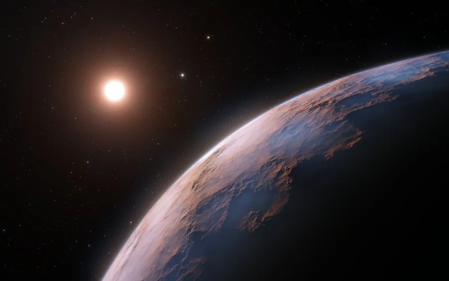

February 10, 2022
Proxima d: a candidate with a quarter of Earth's mass at the nearest star
Using the ESPRESSO spectrograph on ESO's Very Large Telescope, a team found evidence of a third planet orbiting Proxima Centauri, the star closest to the Sun. The candidate Proxima d has only about a quarter of Earth's mass and was the lightest exoplanet measured with the radial velocity technique up to that time.
Proxima d orbits the star in just five days at a distance of about four million kilometers. Its orbit lies between the star and the habitable zone. The signal is very weak: the planet moves the star back and forth at only about 40 centimeters per second.
Source: ESO: "New planet detected around star closest to the Sun." (eso2202), 2022-02-10